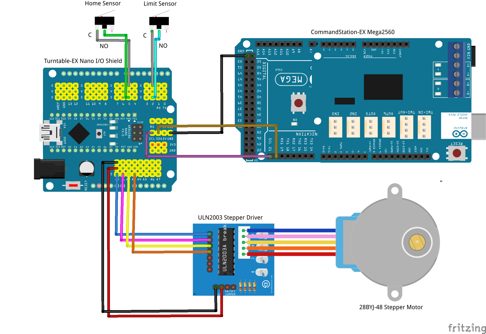

Traversers and Limited Rotation Turntables¶

Overview¶
Turntable-EX has the ability to cater for both horizontal and vertical traversers, as well as turntables that do not rotate a full 360 degrees.
The primary difference from the standard full rotation turntable mode is the addition of a limit sensor to indicate when the traverser or limited rotation turntable reaches the end of its range of movement.
{kind=link}
The home sensor takes on an additional purpose in this mode, so in addition to flagging the home position, it also operates as a limit sensor.
From here on in, for simplicity, we will refer to all variations of horizontal/vertical travers or limited rotation turntables as traversers.
You will note we’ve rated the traverser feature as Tinkerer level. This is primarily due to the additional complexity of ensuring the mechanical aspects of the traverser are taken into consideration such as the home and limit sensors.
Note
This page has been written as an addendum to the general Turntable-EX documentation and focuses on the changes required to enable traverser mode. Please ensure you are familiar with the other existing documentation also.
What you need for traverser mode¶
The same components outlined in What you need for Turntable-EX apply in traverser mode, with two likely exceptions:
Home and limit sensors: Given the need for positive stops at each end’s limit of travel, be it vertical, horizontal, or restricting rotation within an arc for limited rotation turntables, micro switches are likely a better choice for these.
{kind=link}
Dual relay board: With horizontal and vertical traversers, locomotives do not rotate, so it is therefore unlikely any DCC phase switching will be required. Limited rotation turntables are also unlikely to require phase inversion as locomotives will be unable to be rotated 180 degrees. The dual relay board should not be required.
Considerations - turntable vs. traverser¶
In turntable mode, if the home sensor fails or is not adjusted correctly, the worst that will happen is that the turntable will not home, and will not be able to automatically calibrate the steps per rotation. There is no risk of damage if the turntable continues to rotate while attempting to home.
In traverser mode, however, there is risk of physical damage if a stepper motor attempts to drive the traverser beyond the physical limits. Depending on the physical construction, it may damage traverser components, or it may cause the stepper motor to fail. If it causes excess current consumption by the stepper motor, the stepper driver may also overheat and cause electrical damage.
Therefore, it’s imperative that care is taken to ensure the stepper motor rotates in the correct direction, and both home and limit sensors are functional and connected in the right order.
Danger
While the software is designed to cause the stepper to halt when a sensor is activated to prevent damage, the software cannot know if the sensors are not operational, nor if they are connected to the incorrect Arduino pins.
When determining which sensor needs to be located at each limit position of the traverser, you need to take the rotational direction of the stepper motor into account:
The HOME sensor must be activated when the traverser reaches the desired end point with the stepper rotating in the default direction. If using the default configuration, this would be clockwise with the UNL2003/28BYJ-48, and should be clockwise for A4988/DRV8825 and NEMA17 combinations.
The LIMIT sensor must be activated when the traverser reaches the desired end point with the stepper rotating in the reverse direction.
You will need to take these considerations into account, and ensure the sensors are connected in the correct order.
For a method to test and validate this, see Sensor testing mode below.
Assembly¶
General assembly is as per the Getting started page, with the aforementioned limit sensor being connected to the Arduino’s pin 2.
Refer to the connection summary below, which makes the assumption that DCC phase switching is not required.
If using micro switches for the home and limit sensors, the best way is to connect the common terminal of the switch to ground, and the normally open (NO) terminal to the Arduino’s pin. This allows the default “config.h” setting for HOME_SENSOR_ACTIVE_STATE and LIMIT_SENSOR_ACTIVE_STATE to remain unchanged as “LOW”.
It is recommended not to fully assemble the traverser with the stepper motor until such time as you have validated the correct rotational direction of the stepper motor, and that the HOME and LIMIT sensors are connected correctly and functional.
Traverser mode connection summary¶
Summary table of all connections required during assembly:
{kind=link}
Device Pin |
Arduino Pin |
Nano Shield Pin |
|---|---|---|
ULN2003 IN1 |
A0 |
A0 S |
ULN2003 IN2 |
A1 |
A1 S |
ULN2003 IN3 |
A2 |
A2 S |
ULN2003 IN4 |
A3 |
A3 S |
ULN2003 + |
5V |
A0 V |
ULN2003 - |
GND |
A0 G |
Home sensor common |
GND |
2 G |
Home sensor normally open (NO) |
2 |
2 S |
Limit sensor common |
GND |
5 G |
Limit sensor normally open (NO) |
5 |
5 S |
CommandStation 20 (SDA) |
A4 |
A4 S or SDA |
CommandStation 21 (SCL) |
A5 |
A5 S or SCL |
CommandStation GND |
GND |
A4 G or I2C GND |
Loading Turntable-EX for traverser mode¶
Prepare to load the software as per 7. Load the Turntable-EX software, and ensure “config.h” has been created by copying or renaming “config.example.h”.
There is also an example “config.traverser.h” file included with the software that can be renamed to “config.h” instead.
Edit “config.h”, add “//” at the beginning of the #define TURNTABLE_EX_MODE TURNTABLE line, and remove the “//” from the beginning of the #define TURNTABLE_EX_MODE TRAVERSER:
/////////////////////////////////////////////////////////////////////////////////////
// Define the mode for Turntable-EX.
// TURNTABLE : Use this for normal, 360 degree rotation turntables (Default).
// TRAVERSER : Use this for vertical or horizontal traversers, or turntables that do
// do not rotate a full 360 degrees.
//
// #define TURNTABLE_EX_MODE TURNTABLE <<== After adding //
#define TURNTABLE_EX_MODE TRAVERSER <<== After removing //
If you need to make any other adjustments to cater for using different stepper driver/motor combinations, this is the time to do so also.
Tip
If you are using a mechanism that results in anything other than a 1:1 gear ratio (eg. using a lead screw), you may need to consider updating the SANITY_STEPS setting in “config.h”.
This setting defaults to 10000 steps and is used to prevent a stepper turning indefinitely when attempting to find HOME or LIMIT. If the gear ratio results in a step count greater than 10000, the calibration sequence will fail to complete, and updating this setting to a sufficently high step count will solve that issue.
Refer to SANITY_STEPS.
Once “config.h” is updated, you can continue to load the software onto the Arduino.
Once the software is loaded and Turntable-EX starts, the stepper will start rotating in an attempt to activate the homing sensor, and this is an ideal opportunity to observe the direction of the stepper to understand whether the default directional rotation is clockwise, or counter clockwise.
Sensor testing mode¶
Prior to proceeding any further, it is recommended to validate the HOME and LIMIT sensors operate correctly, and that they are connected to the correct pins of the Arduino. A new SENSOR_TESTING mode has been added to allow the sensors to be tested, with all other Turntable-EX functionality disabled.
To enable SENSOR_TESTING mode, you will need to edit “config.h” again, and this time remove the “//” from the beginning of the #define SENSOR_TESTING` line (Refer to SENSOR_TESTING to enable sensor testing mode.):
/////////////////////////////////////////////////////////////////////////////////////
// Enable sensor testing only, prevents all Turntable-EX operations.
// Uncomment this line to disable all normal Turntable-EX operations in order to test
// and validate that homing and limit sensors activate and deactivate correctly.
//
#define SENSOR_TESTING <<== After removing //
Once enabled, load the Turntable-EX software again, and once Turntable-EX starts you should see this displayed in the serial console:
License GPLv3 fsf.org (c) dcc-ex.com
Turntable-EX version 0.4.0-Beta
Available at I2C address 0x60
Turntable-EX in TRAVERSER mode
SENSOR TESTING ENABLED, Turntable-EX operations disabled <<== This message confirms sensor testing is enabled
Home/limit switch current state: 1/1
Debounce delay: 10
Once this message is displayed, you can test the HOME and LIMIT sensors by manually triggering, and you should see the state changes reflected in the serial console as below:
Home sensor ACTIVATED
Home sensor DEACTIVATED
Limit sensor ACTIVATED
Limit sensor DEACTIVATED
If the sensors report an inverted status (ie. ACIVATED when they are DEACTIVATED), then you likely need to review HOME_SENSOR_ACTIVE_STATE and LIMIT_SENSOR_ACTIVE_STATE in “config.h”. If the sensors connect to ground when activated, they must be set to LOW, if they connect to 5V they must be set to HIGH.
If activating HOME activates LIMIT or vice versa, then swap the Arduino pin connections. HOME connects to pin 5, LIMIT connects to pin 2.
When sensor testing is complete, you can add the “//” back in front of the #define SENSOR_TESTING line in “config.h” to disable SENSOR_TESTING mode, and re-load the software to revert to normal Turntable-EX operations.
Automatic calibration¶
Once you know the normal direction of your stepper and have confirmed both HOME and LIMIT sensors work correctly, you can finish assembling your traverser with the stepper and proceed with the automatic calibration.
Note
Remember! The HOME sensor must be activated when the stepper rotates in the default/forward direction, and the LIMIT sensor must be activated when the stepper rotates in the reverse direction.
In traverser mode, the calibration sequence has an additional phase that ensures the calculated step count is reached prior to activating the LIMIT sensor, ensuring this is a safeguard against moving too far.
When starting up for the first time, you should see output in the serial console similar to the below. Note the full turn step count once calibration has completed.
License GPLv3 fsf.org (c) dcc-ex.com
Turntable-EX version 0.4.0-Beta
Available at I2C address 0x60
Turntable-EX in TRAVERSER mode
Turntable-EX has not been calibrated yet <<== Indicates calibration required
Manual phase switching enabled
Calibrating...
Homing started
Turntable homed successfully
CALIBRATION: Phase 1, homing...
Turntable already homed
CALIBRATION: Phase 2, finding limit switch...
CALIBRATION: Phase 3, counting limit steps... <<== Third phase to ensure full step count is reached prior to limit sensor
CALIBRATION: Completed, storing full turn step count: 2508 <<== Step count to record
Turntable-EX has been calibrated for 2508 steps per revolution
Manual phase switching enabled
Homing started
Turntable homed successfully
Traverser mode is ready!¶
Now that you have enabled traverser mode in Turntable-EX, confirmed your HOME and LIMIT sensors are operating correctly, and calibration has completed, you can return to Testing, Tuning, and Control as the tuning steps and control commands are the same in both turntable and traverser modes.